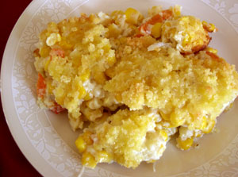

Corn, Chile and Cheese Casserole
(Serves 6-8)
Ingredients - Preparation
Ingredients:
- 1 17-oz can cream-style corn
- 1 4-oz can diced green chiles
- 1 4-oz jar diced pimientos, drained
- ½ cup melted butter
- 2 eggs, beaten
- ½ cup cornmeal
- 1/2 teaspoon salt
- 1 cup sour cream
- 2 cups Monterrey Jack cheese, diced (about ½ pound)
- Enchilada sauce (optional)

Preparation:(top)
Preheat oven to 375°F. Lightly grease 1 ½ quart baking dish. Beat all ingredients in a large bowl and mix thoroughly. Bake uncovered 40 minutes, until set. Good made a day in advance too!
Last Updated:
March 14, 2013